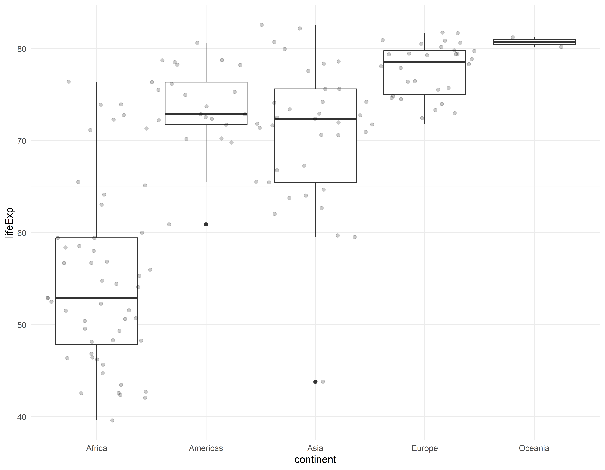

Visualizando as distribuições
Carregando as bibliotecas
Vamos trabalhar de novo com os dados do gapminder para fazer algumas visualizações de dados que são muito úteis no dia a dia.
Este material foi adaptado do curso Data Visualization in R with ggplot2 de Kara Woo
Selecionando dados
gap_07 <- filter(gapminder, year == 2007)Vendo a distribuição
ggplot(gap_07, aes(x = gdpPercap)) +
geom_histogram()#> `stat_bin()` using `bins = 30`. Pick better value with `binwidth`.Criando um histograma usando a regra de Sturges
A regra de Sturges indica 8 faixas enquanto que o padrão do ggplot2 é 30.
Criando um gráfico de densidade
ggplot(gap_07, aes(x = gdpPercap)) +
geom_density()Criando um box-plot
ggplot(gap_07, aes(x = continent, y = lifeExp)) +
geom_boxplot()Criando um box-plot com visão dos dados
ggplot(gap_07, aes(x = continent, y = lifeExp)) +
geom_boxplot() +
geom_jitter(width = 0.5, alpha = 0.2)
Matriz de Correlações
SPLOM
#>
#> Anexando pacote: 'psych'#> Os seguintes objetos são mascarados por 'package:ggplot2':
#>
#> %+%, alphapairs.panels(gap_07_s)Descrevendo a distribuição
#>
#> Anexando pacote: 'datawizard'#> O seguinte objeto é mascarado por 'package:psych':
#>
#> rescaledescribe_distribution(gap_07_s)#> Variable | Mean | SD | IQR | Range | Skewness | Kurtosis | n | n_Missing
#> ---------------------------------------------------------------------------------------------------------
#> lifeExp | 67.01 | 12.07 | 19.59 | [39.61, 82.60] | -0.69 | -0.83 | 142 | 0
#> pop | 4.40e+07 | 1.48e+08 | 2.78e+07 | [2.00e+05, 1.32e+09] | 7.40 | 58.33 | 142 | 0
#> gdpPercap | 11680.07 | 12859.94 | 16579.19 | [277.55, 49357.19] | 1.22 | 0.35 | 142 | 0